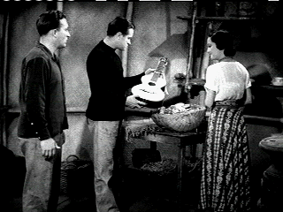

| Road to Singapore/ C+,C+ |
|
Universal/1940/86/ FS 1.33/BW |
Hope and Crosby together at last!
The Road to Singapore is the first of their wildly popular "Road"
Series. Bob Hope is Ace Lannigan and Bing Crosby is Josh Mallon, a
pair of would-be sailors on the loose with a considerable disdain for
responsibility. The catch in The Road to Singapore's plot hinges on a fact
of birth: Josh Mallon is heir to Mallon shipping fortune and his
father, whom he affectionately calls Skipper, wants him to put aside
the fancy free life to take on the responsibility of running the huge
company.
It doesn't take much to send Josh and Ace packing
for exotic waters. A party announcing the marriage of Josh to fast talking
blonde socialite Gloria Wycott ends with a bang and before you can say patty
cake, the boys are spotted in remote Kaigoon, an Asian island with loose
fruit and studio natives. They hook up with a heavy-lidded soporific dancer
named Mina.
|
 |
|
Can you play this thing or can we eat it?
©Universal |
There are a lots of funny bits and pieces to
The Road to Singapore. The signature brawls preceded by the "patty
cake" routine provoke smiles with easy silliness. Gordon Wycott,
Gloria's inebriated brother is very funny in his couple of scenes. When Ace
performs at the shipboard party celebrating the marriage announcement,
Wycott asks Josh "Do you think I could hire your friend to perform at a stag
party some time?" The easy throwaway humor is typified by Ace's line to
Mima: "The first mate's a friend of mine; I used to borrow money from him."
It's not hilarious, but it's beautifully delivered but it's possibly the
best line in the movie as delivered with Hope's best aplomb.
Hope is very entertaining singing the Captain
Custard number. Other songs, like Lamour's Moon and the Willow
are very dated and I can't imagine it being good even sixty years ago.
Crosby croons Sweet Potato Piper effectively enough, but the song's
not that entertaining. Bing and Lamour croon Too Romantic and
it's a decent fluff number. The big production number is the native
feast. It's about as silly as you can get with Hope and Crosby cavorting in
drapery made sarong's in brown face. Why is there a native feast anyway. I
guess it doesn't matter. That's the spirit of the road movies. The dancing
is purposefully banal spoofing typical Hollywood musicals, but it
doesn't play quite funny enough. Crosby gets to some very funny dance steps
at the feast at least.
Both Hope and Crosby are consistently entertaining with
a free spirit of delivery and excellent chemistry together. It's surprising
that Dorothy Lamour survived as a stalwart of the road flicks since in this
debut film she's about as entertaining as a dead penguin. It's grand fun to
see Anthony Quinn playing Caesar , Mima's whip dancer partner in the Kaigoon
bar. He's set up as the villain and there are a couple of patty cake fights
with him, but by the film's end his character has faded to little or no
importance.
The road movies have a spirit of freedom and fun about
them. They are not remotely connected with reality in any sense of the word,
and perhaps, owing to their pure escapist point of view, they were very
successful as the world engaged in World War II. Whether it's Singapore,
Zanzibar, Morocco or Hong Kong, the details aren't important; it's all about
the fancy free spirit of Hope and Crosby in the various surroundings. The
Road to Singapore is far best "road" movie, but it does set the
standards and is fun.
Don't expect great things from the transfer of The
Road to Singapore. It's serviceable, but sets no standards. Very grainy
in the opening harbor scene. Opening credits look good with good
contrast range and black level. The grain is very heavy in rear projection
sequences, but that is typical. There's frequent evidence of image
instability exhibited by film flashing and element distortion. Image is a
little soft here and there perhaps owing to digital cleaning. Excess
grain appeared throughout. Scratches and dirt pop up here and there. There
are a few full length scratches. There's some moments of jitter and
fluttering in the image. The soundtrack got very scratchy toward the later
part of the film. Contrast level is good and for the most part The Road
to Singapore is sharp.
A fourteen minute short, Bob Hope and the Road to Success,
skims the surface of the success of the road flicks, touching on the series
but focusing its clips mostly on Road to Singapore. There's also a
six minute featurette. Bob Hope and the USO, including a little
newsreel footage of Hope at work. Hope biographer Richard Grudens and
former co-star Phyllis Diller provide a few snippets of remembrance on
Hope's career.
Reviewed on a Sharp 9000VX DLP Projector
|
|
|
|

The wonderful comedy of Danny Kaye comes from a sweet source, making it
live for audiences of all ages. Patter songs and graceful dances are part of
Kaye's world. Click on the image for Any Day Danny Kaye.

The Movie Poster Archive includes extensive poster
images from the films of stars like Susan Hayward, Kirk Douglas, Katharine
Hepburn and many more. Our featured star is
Cary Grant.

Lady Eve, The
(SE) A,C+

Wonderful classic comedy from writer/director Preston Sturges. Henry
Fonda and Barbara Stanwyck star


Glenn Erickson's insightful DVD reviews have been a Internet fixture for
several years. Check out some of his sophisticated feature articles.
Currently hosted by DVD Talk.

Agoraquest
is offering reviews, forums,
news, and more dedicated to Sony products including, televisions, cameras,
audio, DVD, and more.

Nearly 40 key software and hardware
companies representing leading consumer electronics giants, major movie
studios home video and music video units have joined forces to establish the
DVD Video Group.

Classic Images on classic films, featuring news, reviews, obituaries,
film convention reports, and detailed articles on film people, from the most
famous to the most obscure
Umberto Passini Online

Vintage & Contemporary Film Poster Art. Umberto has developed
a fine Internet reputation as reliable and honest. Nice posters too!

The National Film Preservation
Foundation (NFPF) is the nonprofit
organization created by the U.S. Congress to save America's film heritage.
|